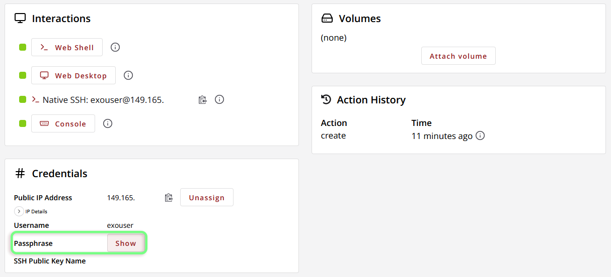

Accessing an Exosphere Instance¶
The exouser Profile & Passphrase¶
Instances launched with Exosphere will be created with a user exouser. By default, exouser has sudo privilege, and any web shells/desktops launched from Exosphere will be signed in with this account. Should you ever need the initial passphrase (password) created for exouser, it can be found on the Instance’s Details page under “Credentials.”

Accessing an Instance through Exosphere Web Interface¶
Exosphere provides a variety of different methods for interacting with your instances, depending on the options selected during creation. These options include the web shell, web desktop, and console, all of which can be accessed either from the Exosphere Instance List page (with the “Connect to” dropdown) or from the Interactions section of the Instance Details page.
Remember that the web shell and web desktop will not be available if you have chosen not to assign a public IP address to your instance!
| Instance List Page | Instance Details Page |
|---|---|
 |
 |
Web Shell (Guacamole)¶
By default, Exosphere configures all new instances with an easy-access web shell via Guacamole. This command-line interface signs in as exouser, and thus has sudo access.
Tip: From the web shell, you can open/close a menu overlay with ctrl+alt+shift. This menu supports directly uploading and downloading files to/from your instance, as well as sharing clipboard data.
Web Desktop (Guacamole)¶
If an instance was configured with Web Desktop enabled, Exosphere will provide an interactive GNOME desktop environment for you to work in. Like the web shell, this is powered by Guacamole and signs in as exouser.
Console¶
The Exosphere console is usually only used in rare circumstances, like recovering an instance with broken network connectivity or a corrupted disk. The console is more akin to plugging a monitor, keyboard, and mouse into the machine than accessing it via the Web Shell. If the Web Shell is working, it will generally offer a better experience than the console.
When using the console, you will not be signed into the machine automatically, so you will likely need to reference the exouser passphrase (see above).
Accessing an Instance with Native SSH¶
If your instance does not have a public IP address assigned to it, you will be unable to SSH from your workstation (or anywhere else outside of Jetstream2, unless you are using another instance within the same allocation that does have a public ip as a tunnel point or jump host).
Exosphere instances support SSH connections with both passphrase and public key authentication. You probably already have an SSH client on your computer, included with your operating system. You can use this to connect to your instance. MacOS users can SSH from the Terminal app, and practically every Unix/Linux system has command-line SSH support. Windows 11 and Windows 10 (build 1809 and later) have a standard SSH client accessible in the Command Prompt and Powershell, although you may need to enable it in the settings. If your Windows version is too old, or you want a more customizable environment, these resources may be useful:
- PuTTY, a free SSH client and
xtermterminal emulator for Windows and Unix. - Install Linux on Windows with WSL
SSH Passphrase Authentication¶
Passphrase authentication is enabled on Exosphere-created instances by default. To connect to your instance, simply execute (where <PUBLIC_IP> is replaced with your instance’s public ip address, e.g. 149.165.0.0)
ssh exouser@<PUBLIC_IP>
The Interactions section of the Instance Details page also shows this SSH connection string.
When prompted, enter the exouser passphrase.
If you want to force passphrase authentication, but are being prompted for a public key (or passphrase for your public key), you can instead try
ssh -o PreferredAuthentications=password -o PubkeyAuthentication=no exouser@<PUBLIC_IP>
SSH Public Key Authentication¶
This guide assumes that you have already generated a public/private key pair. For step-by-step instructions on doing so, see the IU Knowledge Base.
Public key authentication is preferred to passphrases by many. Adding your public key to an instance with the Exosphere UI is only possible during creation; however, there is a workaround.
Adding a Public Key Manually¶
- Access your instance’s web shell or console, or by SSH using passphrase authentication
- Open up the file
/home/exouser/.ssh/authorized_keysin the editor of your choice, for example:vim /home/exouser/.ssh/authorized_keys - Paste your public SSH key into the file (never share your private keys) by copying it into the clipboard on your workstation, then right-clicking on the web shell. If you are having trouble copying/pasting, see Exosphere Troubleshooting. If the file is not empty, simply put your key on a new line.
- Save and close the file.
Using a public key¶
Once your public key is registered on your instance, you should be able to SSH by referencing the private key file with
ssh -i /path/to/key/file exouser@<PUBLIC_IP>
Usually this will look something like
ssh -i ~/.ssh/id_rsa exouser@149.165.0.0